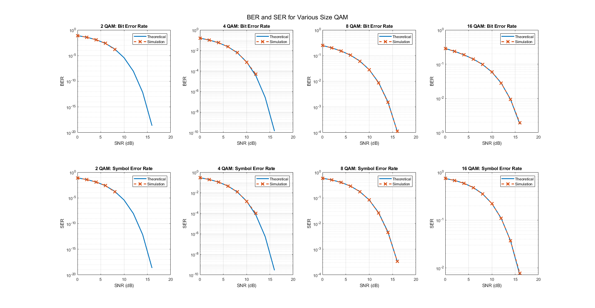
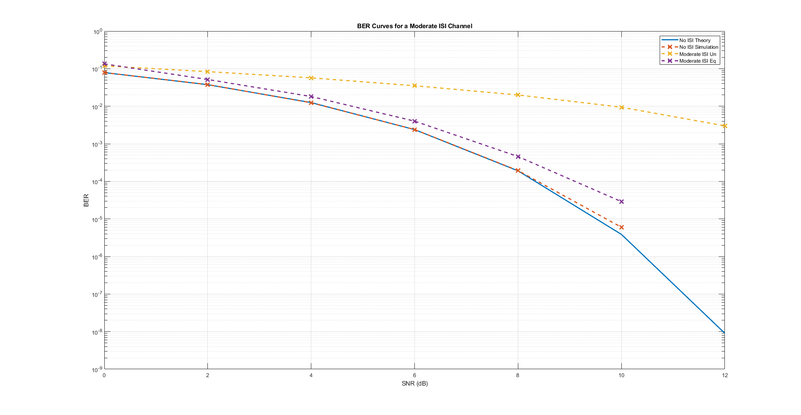
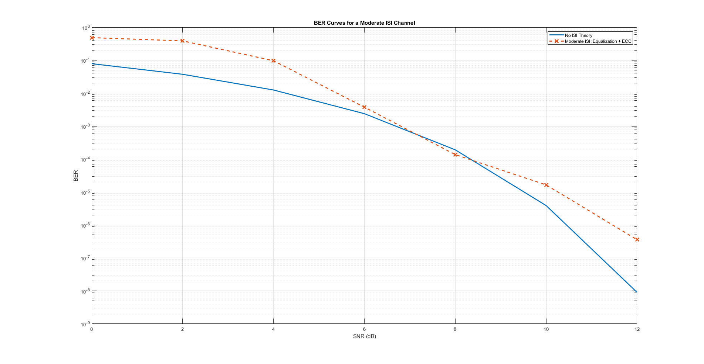

Contents
clear; clc; close all;
Part 1: No Channel QAM
numIter = 1e2;
numSyms = 1e3;
SNRdB = 0:2:16;
varN = 10.^(-SNRdB/10);
lenSNR = length(SNRdB);
M = [2,4,8,16];
chan = 1;
figure('units','normalized','outerposition',[0,0,1,1])
for ii = 1:length(M)
bar = waitbar(0,[num2str(M(ii)), ' QAM']);
EbNodB = SNRdB - 10*log10(log2(M(ii)));
berIter = nan(lenSNR,numIter);
serIter = nan(lenSNR,numIter);
for jj = 1:numIter
txBits = randi([0,1],numSyms,log2(M(ii)));
txMSG = bi2de(txBits,'left-msb');
tx = qammod(txMSG,M(ii));
for kk = 1:lenSNR
txChan = filter(chan,1,tx);
if(M(ii) == 2)
noise = sqrt(varN(kk)/2)*(randn(numSyms,1)+1j*randn(numSyms,1));
txNoisy = txChan + noise;
else
txNoisy = awgn(txChan,SNRdB(kk),'measured');
end
rxMSG = qamdemod(txNoisy,M(ii));
rxBits = de2bi(rxMSG,log2(M(ii)),'left-msb');
[~,berIter(kk,jj)] = biterr(txBits,rxBits);
serIter(kk,jj) = sum(txMSG ~= rxMSG)/numSyms;
end
waitbar(jj/numIter,bar)
end
berSim = mean(berIter,2);
serSim = mean(serIter,2);
if(M(ii) == 2)
EbNo = 10.^(EbNodB/10);
berTh = qfunc(sqrt(2*EbNo));
serTh = berTh;
else
[berTh,serTh] = berawgn(EbNodB,'qam',M(ii));
end
subplot(2,length(M),ii)
semilogy(SNRdB,berTh,'Linewidth',2)
hold on;
semilogy(SNRdB,berSim,'--x','Linewidth',2,'MarkerSize',10)
xlabel('SNR (dB)')
ylabel('BER')
title([num2str(M(ii)), ' QAM: Bit Error Rate'])
legend('Theoretical','Simulation')
grid on
subplot(2,length(M),length(M)+ii)
semilogy(SNRdB,serTh,'Linewidth',2)
hold on;
semilogy(SNRdB,serSim,'--x','Linewidth',2,'MarkerSize',10)
xlabel('SNR (dB)')
ylabel('SER')
title([num2str(M(ii)), ' QAM: Symbol Error Rate'])
legend('Theoretical','Simulation')
grid on
close(bar)
end
sgtitle('BER and SER for Various Size QAM')

Part 1: BPSK with moderate ISI channel
numIter = 5e2;
numSyms = 1e3;
SNRdB = 0:2:12;
varN = 10.^(-SNRdB/10);
lenSNR = length(SNRdB);
M = 2;
trainLen = 1e2;
chan = [1, .2, .4];
berNone = nan(lenSNR,numIter);
berModUn = nan(lenSNR,numIter);
ber2 = nan(lenSNR,numIter);
bar = waitbar(0,'Moderate ISI');
for ii = 1:numIter
txBits = randi([0,1],numSyms,log2(M));
txMSG = bi2de(txBits,'left-msb');
tx = qammod(txMSG,M);
for jj = 1:lenSNR
txChan = tx;
noise = sqrt(varN(jj)/2)*(randn(numSyms,1)+1j*randn(numSyms,1));
txNoisy = txChan + noise;
rxMSG = qamdemod(txNoisy,M);
rxBits = de2bi(rxMSG,log2(M),'left-msb');
[~,berNone(jj,ii)] = biterr(txBits,rxBits);
txChan = filter(chan,1,tx);
noise = sqrt(varN(jj)/2)*(randn(numSyms,1)+1j*randn(numSyms,1));
txNoisy = txChan + noise;
rxMSG = qamdemod(txNoisy,M);
rxBits = de2bi(rxMSG,log2(M),'left-msb');
[~,berModUn(jj,ii)] = biterr(txBits,rxBits);
eq1 = dfe(1,2,lms(1e-2));
eq1.SigConst = qammod(0:(M-1),M);
rxEq = equalize(eq1,txNoisy,tx(1:trainLen));
rxMSG = qamdemod(rxEq,M);
rxBits = de2bi(rxMSG,log2(M),'left-msb');
[~,ber2(jj,ii)] = biterr(txBits(trainLen+1:end,:),...
rxBits(trainLen+1:end,:));
end
waitbar(ii/numIter,bar)
end
close(bar)
berNone = mean(berNone,2);
berModUn = mean(berModUn,2);
ber2 = mean(ber2,2);
berTh = qfunc(sqrt(2*10.^(SNRdB/10)));
figure('units','normalized','outerposition',[0,0,1,1])
semilogy(SNRdB,berTh,'Linewidth',2)
hold on
semilogy(SNRdB,berNone,'--x','Linewidth',2,'MarkerSize',10)
semilogy(SNRdB,berModUn,'--x','Linewidth',2,'MarkerSize',10)
semilogy(SNRdB,ber2,'--x','Linewidth',2,'MarkerSize',10)
legend('No ISI Theory','No ISI Simulation','Moderate ISI Un','Moderate ISI Eq')
title('BER Curves for a Moderate ISI Channel')
xlabel('SNR (dB)')
ylabel('BER')
grid on

Part 2: BER of 1e-6 at SNR of 12dB in a moderate ISI channel
numIter = 4e3;
numSyms = 1e3;
SNRdB = 0:2:12;
varN = 10.^(-SNRdB/10);
lenSNR = length(SNRdB);
k = 1;
n = 2;
M = 2^n;
trainLen = 3e2;
fftaps = 1;
fbtaps = 2;
trellis = poly2trellis([9],[561,753]);
chan = [1, .2, .4];
ber2 = nan(lenSNR,numIter);
bar = waitbar(0,'Moderate ISI');
for ii = 1:numIter
txBits = randi([0,1],k,numSyms);
txBits = reshape(txBits,1,[]);
msgBits = convenc(txBits,trellis);
msgBits = reshape(msgBits,n,numSyms)';
txMSG = bi2de(msgBits,'left-msb');
tx = qammod(txMSG,M);
for jj = 1:lenSNR
txChan = filter(chan,1,tx);
if(M == 2)
noise = sqrt(varN(jj)/2)*(randn(numSyms,1)+1j*randn(numSyms,1));
txNoisy = txChan + noise;
else
txNoisy = awgn(txChan,SNRdB(jj),'measured');
end
eq1 = dfe(fftaps,fbtaps,lms(1e-2));
eq1.SigConst = qammod(0:(M-1),M);
rxEq = equalize(eq1,txNoisy,tx(1:trainLen));
rxMSG = qamdemod(rxEq,M);
rxBits = de2bi(rxMSG,log2(M),'left-msb');
rxBits = reshape(rxBits',1,[]);
decBits = vitdec(rxBits,trellis,numSyms,'trunc','hard');
ind = k*trainLen+1;
[~,ber2(jj,ii)] = biterr(txBits(ind:end),...
decBits(ind:end));
end
waitbar(ii/numIter,bar)
end
close(bar)
ber2 = mean(ber2,2);
berTh = qfunc(sqrt(2*10.^(SNRdB/10)));
figure('units','normalized','outerposition',[0,0,1,1])
semilogy(SNRdB,berTh,'Linewidth',2)
hold on
semilogy(SNRdB,ber2,'--x','Linewidth',2,'MarkerSize',10)
legend('No ISI Theory','Moderate ISI: Equalization + ECC')
title('BER Curves for a Moderate ISI Channel')
xlabel('SNR (dB)')
ylabel('BER')
grid on
